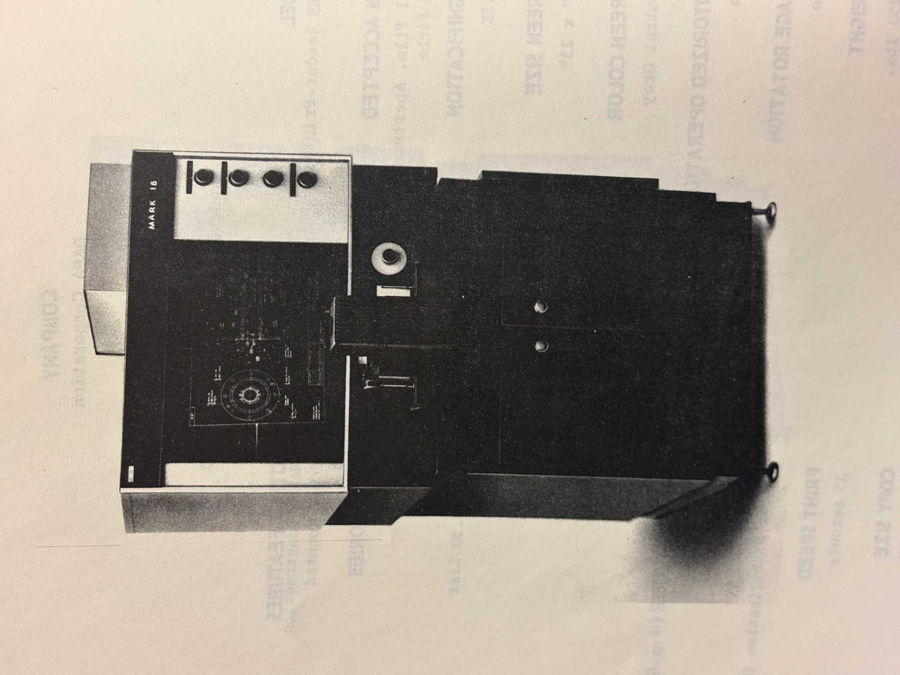

c.1968–1978
DASA Corporation (Andover, Massachusetts)
DASA Mark 18 Microfilm Reader-Printer (c.1968–78)
One console that read roll film, aperture cards and fiche — the archive's interface was a search-and-print ritual
